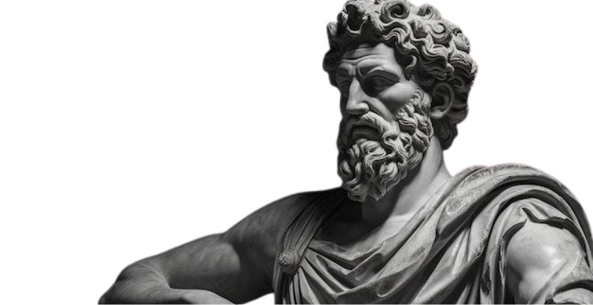

Fundada por Zenão de Cítio no século III a.C., essa filosofia defende que a felicidade e a paz interior vêm da aceitação do presente e do controle das próprias reações emocionais. Em vez de buscar controlar o mundo externo, o estoicismo ensina o foco no autocontrole e a serenidade diante das adversidades.
A filosofia estoica valoriza o autoconhecimento, a ética e o desenvolvimento pessoal, centrando-se nas virtudes da sabedoria, coragem, justiça e moderação. Segundo os estoicos, o sofrimento surge quando nos apegamos ao que não controlamos, como a opinião dos outros, ou quando deixamos que emoções intensas nos dominem.